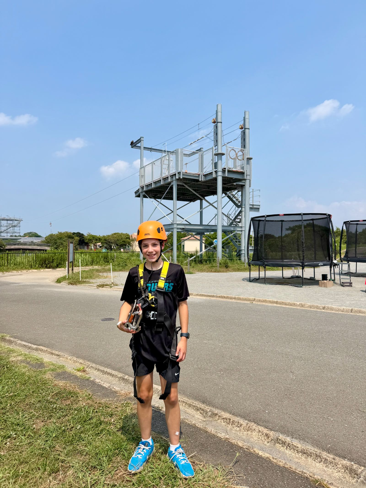

The Ultimate Summer Day Out at Soleil Hill! 🌻🎢


Watch on YouTube →
Summer in Japan is nothing short of spectacular. Since settling into life here in Yokosuka, Megan and I have been on a mission to explore every local gem the Miura Peninsula has to offer. This weekend, our adventures took us to the incredible Soleil Hill, and it honestly felt like stepping into a vibrant, sun-soaked postcard.
If you haven't been yet, Soleil Hill is a beautiful park that seamlessly blends natural scenery with absolute fun. We were immediately greeted by endless fields of bright sunflowers blooming in the August heat—a perfect, picturesque backdrop to start the day.
But it wasn’t just about the flowers; we spent the afternoon having an absolute blast on the attractions. We hopped on the Ferris wheel for some amazing views of the park, rode the hilarious Capybara coaster, and channeled our competitive sides on the go-kart track and bumper boats. We even got to test out our aim at the archery range and fly across the park on the zipline!
It was the ultimate summer day out, packed with laughs, sunshine, and a few thrills. Whether you are living nearby or just traveling through Kanagawa, it's a spot you absolutely have to add to your itinerary.
Have you visited Soleil Hill yet, or do you have a favorite summer spot nearby? Let us know in the comments below!